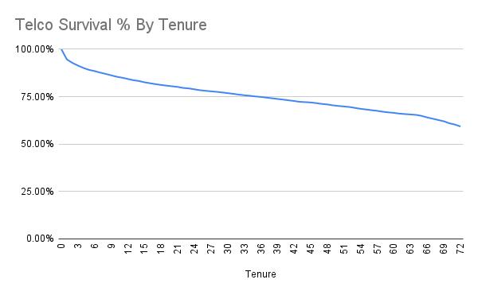
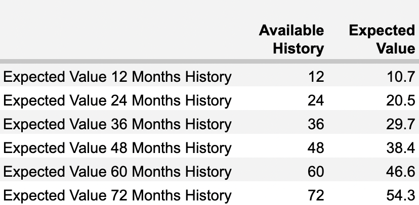
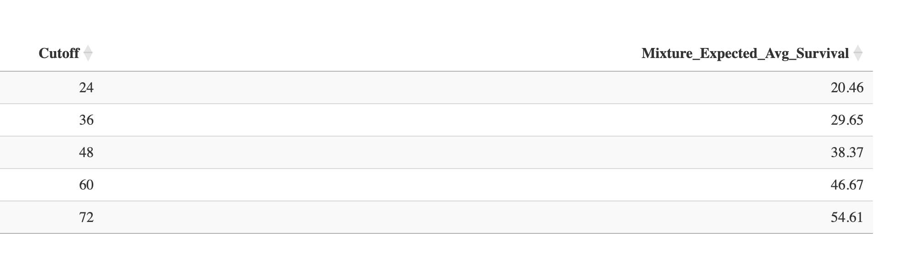

Subscriber Lifetime Value Modeling
While working on a marketing campaign dashboard that reports Return on Ad Spend (ROAS) at the campaign level, I was asked to include predicted lifetime value (LTV) alongside current 'ROAS to date'. This would make a case for increased spend on ads by justifying higher bids at the margin.
There are multiple ways to calculate subscriber survival and expected lifetime value. In this example I fitted survival curves using various parametric models, then integrated the best fitting one to get expected value.
Example Data
One well-known churn dataset is the IBM Telco Customer Churn Dataset, also hosted on Kaggle.
Spreadsheet
I downloaded the Telco Churn data into Google Sheets here.
For each tenure, I took the count of churned accounts as the numerator and, for the denominator, accounts with as much or more tenure i.e., if an account is only 3 months old, it is not included in the denominator for survival of tenures of 4 or more months. This approach is called Kaplan-Meier and here is the resulting survival curve using the telco churn dataset:

This curve provides the probability that an account remains active after a given number of months, e.g., 12, 24, 36 months gives 84%, 79%, and 75%.
Calculating the average of the area under the curve by integrating it gives the expected lifetime value, in this case of 54 months.
A drawback of this non-parametric method is that the expected survival value is determined by how much historic data you have.
The table below, from the same linked spreadsheet above, shows the estimated survival value, but having restricted the available history to each corresponding bin.

Had the telco data been for a new business with only 12 months of history, integrating the survival curve would have provided a misleading expected survival of only 10.7 months.
Kaplan-Meier is useful for understanding survival probability at a given timepoint where history exists within the data rather than providing an overall expected survival value. It is often a first look at survival analysis for a business and is just churned accounts / accounts that could have churned for each time period.
Parametric Models
Unlike Kaplan-Meier, parametric models can extrapolate to predict survival for future, unseen time periods. Provided the model fits well.
To demonstrate this, pretend there's only data for 24 months of history, whereas the goal might be to understand survival by 36 or even 48 months.
Use cases:
- New business with less historic data trying to estimate future retention
- Product AB testing, where you can model expected survival vs. a test group
- Adjust campaign ad spend based on expected lifetime ROAS of a cohort
Workflow
Code used for this analysis is here.
Since there are 24 months of total history in this scenario:
- Train some parametric models on the first 12 months
- Test the models against actual survival between 13 and 24 months and choose the best fit
- Predict out to 36 months after refitting the best fit model on the full 24 months of available data
The plots below show actual survival in dark blue, while the lighter blue line is the predicted survival for each parametric model tried.
The models were only trained on 12 months of data, so everything after 12 months on the light blue curves is extrapolated and can be compared to the actual dark blue line.
In this case, just eyeballing the plots, the mixture model combining Weibull and Exponential Decay fitted actual data out to 24 months a little better than Weibull or LogLogistic by themselves.

Having identified the best fit model, I retrained it on the full 24 months of available data, and then predicted into the future to 36 months.
Expected Survival Time (LTV)
Integrating a survival curve gives the mean expected survival time. Multiply monthly or annual revenue by this value to estimate lifetime value for a new subscriber.
Since parametric curves level off, a hard cutoff, such as 3, 4, or 5 years, must be defined before integrating.
With only 24 months of history, integrating the Kaplan-Meier curve estimates survival at 20.5 months (see the table in the "Spreadsheet" section above). In contrast, integrating the mixture model’s 36-month survival curve yields an average survival of 29.7 months.
The parametric model provides a fairer survival estimate by extending beyond the initial 24 months of immediately available data.

These LTV multipliers can be applied to new subscriptions to estimate expected lifetime value.